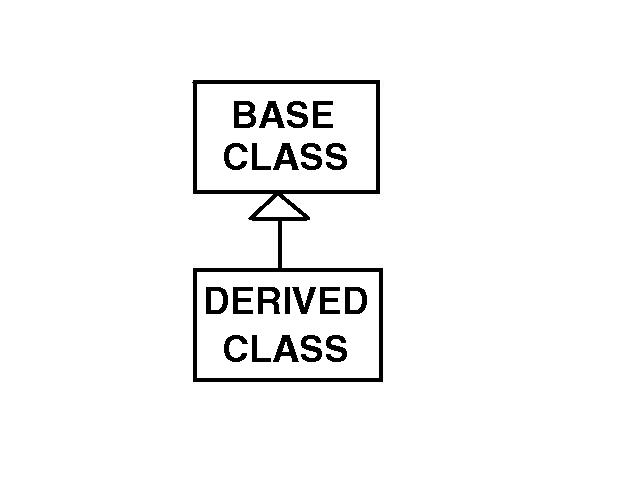

Lists
Example:
class MyClass:
# class declaration
def myMethod(self, str): # method
defined within the class
print str
# a simple print statement
Notice the indentation. Every method or variable within the class must be indented consistently to indicate its inclusion in the class. Note the special "self" argument. This is a way for us to keep track of what class a method or variable belongs to. You don't need to worry much about it except to:
class MyClass:Make sure to list "self" as the first argument of method definitions within the class and Make sure that when calling another method within the class, use "self.methodName" omitting "self" as the first argument:
def myMethod(self, str):
print str
self.myStr = str
def anotherMethod(self):
self.myMethod("guido rocks")
def aThirdMethod(self):
print "Last string printed", self.myStr
When you want to use the methods inside a class, you "instantiate" the class or create an instance of the class. Then you can call the methods of the class as shown below:
classInstance =
MyClass()
classInstance.myMethod("spam
and eggs")
This would result in output of:
spam and eggs
Finally, you may want to include a "constructor" which is a special method to be run any time the class is instantiated. This is handy if you want to initialize variables.
class MyClass:
def __init__(self):
self.myStr = ""
Often we find that a new class would benefit from having the functionality of an existing class. Instead of altering the existing class, we can "inherit" its functionality and then add to it or alter it in our new class. For example, suppose we have a WeatherElement class that stores and performs general operations on a weather element such as temperature, sky cover, or wind. We might find operations for creating a new grid, storing a grid or deleting a grid from the inventory. However, when we need to calculate the values for the grid, our functions might be different depending on whether the weather element is a Scalar or a Vector. In this case, we might want to create two new classes, one for operating on Scalar weather elements and one for operating on Vector weather elements. However, we would like both classes to have access to the general methods in the original WeatherElement class.Inheritance
When there is an inheritance relationship, we call the existing class the "base" class and the new class the "derived" class. This relationship is specified as follows:
class DerivedClass (BaseClass):
def __init__(self):
BaseClass.__init__(self)
Notice that we included a constructor and instantiated the BaseClass to ensure that any base class initializations will take place. Here's how our example classes might be declared:
class WeatherElement:
def __init__(self):
pass
def storeGrid(self):
...
def deleteGrid(self):
...
def createGrid(self):
...
class ScalarElement (WeatherElement):
def __init__(self):
WeatherElement.__init__(self)
def calculateScalarValues(self):
...
class VectorElement (WeatherElement):
def __init__(self):
WeatherElement.__init__(self)
def calculateVectorValues(self):
...
def createGrid(self):
# Special case of creating a vector grid
Now the DerivedClass can call any methods in the BaseClass using the "self" argument. So, for example, the "storeGrid" method is available to both the ScalarElement and VectorElement classes. If we want to alter the functionality of a BaseClass method, we can simply include a copy of it in the DerivedClass definition and make any desired changes to it there. Notice that we have included a copy of the "createGrid" method within the VectorElement class for which there will be some special set-up when creating the vector grid. When a method is called, the system first searches in the DerivedClass for it. If it is not there, it searches in the BaseClass. Of course, the BaseClass may have inherited from another class and, if so, the search will proceed recursively.
Sometimes it is useful to draw classes and their inheritance relationships. We do so as shown below:

The classes are represented by the rectangles and the special "inheritance
symbol" indicates that the Derived Class inherits the methods and variables
from the Base Class. Think of the symbol not as an arrow indicating
flow, but as an "umbrella" indicating inclusion of capabilities.